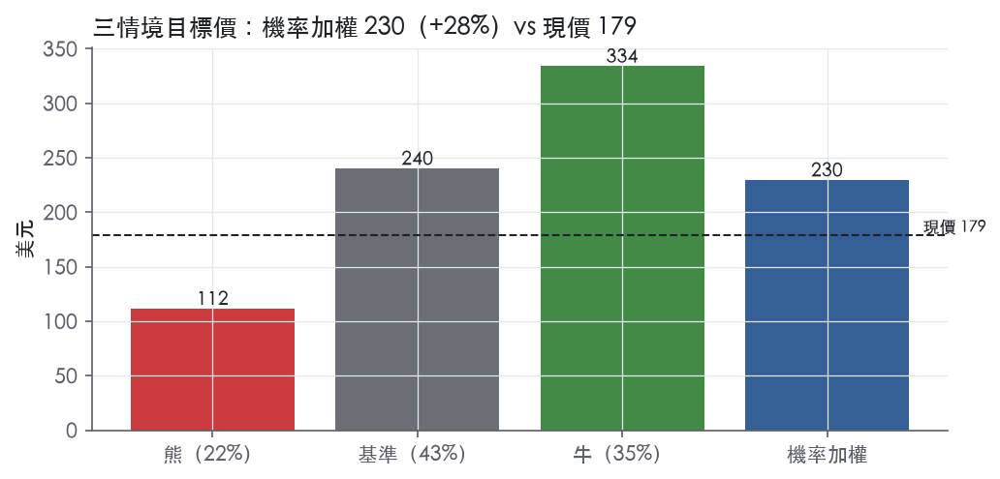
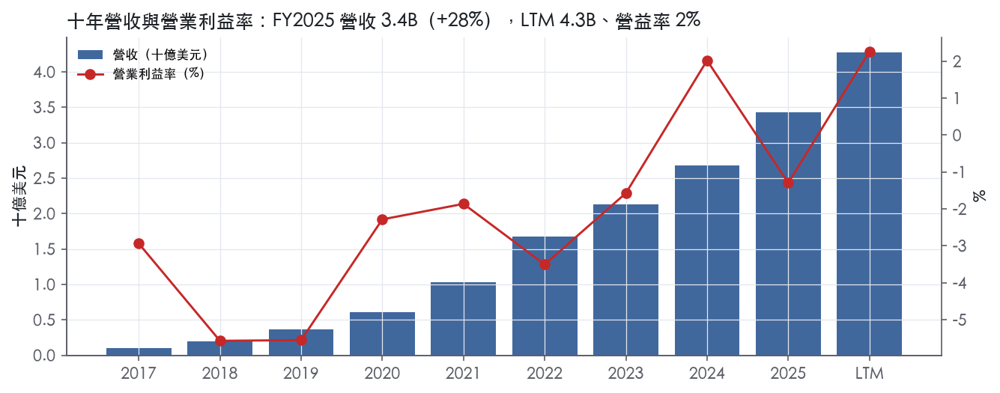
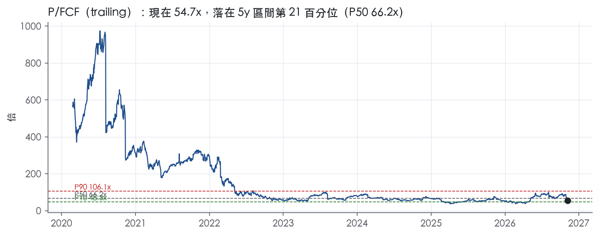
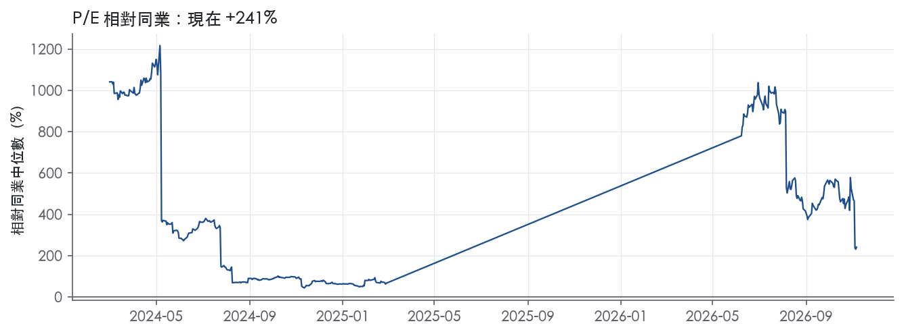
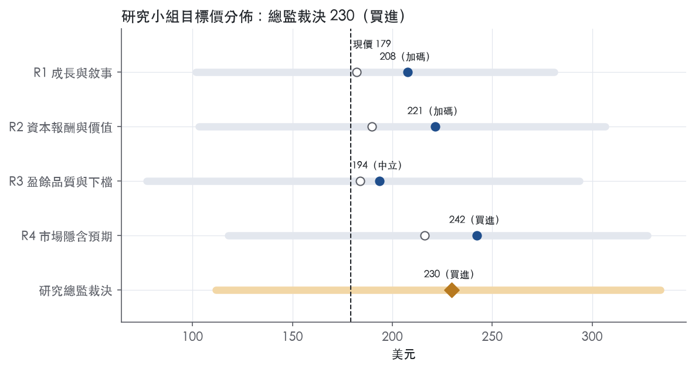
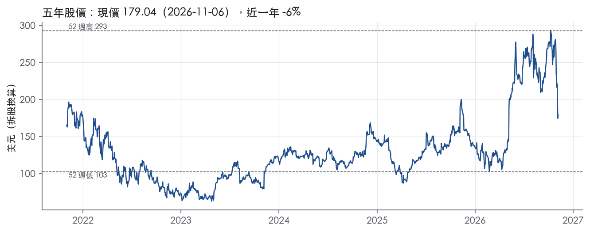

評等總表 › 資訊科技 › DDOG
倍數壓縮已發生，成長沒有，看多｜評等 買進｜目標價 230
| 報告日 | 評等 | 目標價 | 當時股價 | 超額報酬 |
|---|---|---|---|---|
| 2026-11-06 | 買進 | 230 | 179 | +18.5% |
| 2026-10-30 | 賣出 | 221 | 235 | -16.2% |
| 快評 | 動作 | 結論 |
|---|---|---|
| 2026-11-04 | 維持 | 獲利大幅高於預測，維持賣出 |
| 評等 | 買進 |
| 12 個月目標價 | 230 美元 |
| 現價 | 179.04 美元（2026-11-06） |
| 預期報酬 | 股價 +28.3%＋股息 0.0%＝總報酬 +28.3%；同業籃門檻 9.8%，超額 +18.5% |
| 估值方法 | P/FCF 56.0x，套在第 5–8 季的自由現金流（也就是一年後的未來四季） |
| 三情境 | 熊 112／基準 240／牛 334 |
| 研究流程 | 四位研究員兩輪辯論＋研究總監裁決 |
| 資料來源 | SEC EDGAR XBRL、Tiingo、FRED（全免費） |
倍數壓縮已發生，成長沒有，看多（研究總監裁決，四位研究員兩輪辯論後）
評等 買進｜12 個月目標價 230 美元（總監三情境機率加權 245 與研究員中位數 214 各半）｜現價 179.04（2026-11-06）
預期報酬：股價 +28.3%＋股息 0.0%＝總報酬 +28.3%。同業籃門檻 9.8%，超額 +18.5%。
估值方法：P/FCF 56.0x，套在第 5–8 季的自由現金流（也就是一年後的未來四季）。三情境：熊 112（22%）／基準 240（43%）／牛 334（35%）。
什麼會讓研究總監改變看法：FY2026Q4 營收未超出 1.20B 或 FY2026 10-K 顯示最大客戶貢獻轉負，y2 回 R2 的 19%、倍數回前瞻帶 P50 50.3x、轉中性；10-Q 證實模型口徑 FCF 比申報口徑低逾 15%，倍數上修到 60x 附近。
| 過去四季（實際，FY2026Q3） | 未來四季 | 第 5–8 季 | 第 9–12 季 | |
|---|---|---|---|---|
| 營收（B） | 4.3B | 5.4B | 6.6B | 7.8B |
| 營收成長 | 33.2% | 27.0% | 22.0% | 17.0% |
| 營業利益率 | 2.3% | 3.5% | 6.5% | 8.5% |
| EPS（美元） | 0.72 | 0.41 | 0.92 | 1.38 |
| EPS 成長 | 133.8% | -43.4% | 127.1% | 49.2% |
| 每股股息（美元） | — | 0.00 | 0.00 | 0.00 |
| P/E（現價） | 249.3x | 440.6x | 194.0x | 130.1x |
| 股息殖利率（現價） | — | — | — | — |
過去四季為申報數字；預測為研究總監的假設、程式計算。倍數與殖利率都用現價計算，用來看現價對應各期獲利的高低。
| 項目 | 上次（2026-11-01） | 這次（2026-11-07） | 變動 |
|---|---|---|---|
| 評等 | 賣出 | 買進 | 變動 |
| 機率加權目標價（美元） | 221 | 230 | +4.1% |
| 超額報酬 | -16.2% | 18.5% | +34.7 pp |
| 目標倍數 | 66x | 56x | — |
| 未來四季營收成長 | 29.0% | 27.0% | -2.0 pp |
| 未來四季營益率 | 1.0% | 3.5% | +2.5 pp |
| 未來四季 EPS（美元） | 0.09 | 0.41 | +332.8% |
| 熊／基準／牛機率 | 25／40／35 | 22／43／35 | — |
程式計算；「未來四季」各自從當次報告的資料起點算。研究總監逐點說明見第八章「與上次報告比較」。
| 情境 | 機率（歷史） | 故事 | 未來四季營收成長 | 第 5–8 季營益率 | 倍數 | 目標價 | 股價漲跌 |
|---|---|---|---|---|---|---|---|
| 熊 | 22%（16%） | 風險表第 1 條 AI-native 最大客戶自 FY2027Q1 優化用量，疊加第 3 條 IT 支出放緩（本行下行路徑 GDP 0.3%），成長降到 12% 時 SBC 持平 20.1%、GAAP 營益率回到前七季 ≤1.3% 的水位（去槓桿先例 FY2022–23 的 −3.5%、−1.6%），倍數回自家前瞻帶 P10 35.9x | 22.0% | 1.0% | 36.0x | 112 | -37.6% |
| 基準 | 43%（48%） | 成長 35% 有序降到 22%，Non-GAAP 回到 28% 使 GAAP 營益率擴張到 6.5%，倍數持平，報酬全部來自 FCF | 27.0% | 6.5% | 56.0x | 240 | 34.2% |
| 牛 | 35%（36%） | AI 工作負載進入生產、Bits／Scout 帶來可歸因營收，一年後前瞻成長仍 30%，營益率擴張幅度與 R4 同路徑（撤回總監自行加碼），倍數高於持平但遠低於前瞻帶 P75 99.6x | 34.0% | 9.0% | 64.0x | 334 | 86.6% |
目標價由程式依研究總監的驅動與倍數計算；機率由研究總監給定。括號內是歷史頻率：把這檔股票過去十年 12 個月報酬的波動形狀，置中在基準情境，結果落在各情境附近的比例。

四位研究員用不同方法各自估值，回應研究總監的質疑後交出第二輪，最後由總監逐點裁決。各研究員的主張見第七章，裁決理由見第八章，完整論證見《研究底稿》。
| 立場（一輪→二輪） | 加權目標價（一輪→二輪） | 評等（一輪→二輪） | 第二輪倍數 | 熊～牛目標價 | |
|---|---|---|---|---|---|
| R1 成長與敘事 | 中性→看多 | 182→208 | 減碼→加碼 | 58.0x | 102～281 |
| R2 資本報酬與價值 | 中性→看多 | 190→221 | 中立→加碼 | 66.2x | 103～307 |
| R3 盈餘品質與下檔 | 中性→中性 | 184→194 | 減碼→中立 | 45.0x | 77～294 |
| R4 市場隱含預期 | 看多→看多 | 216→242 | 加碼→買進 | 56.0x | 118～328 |
| 研究總監裁決 | 看多 | 230 | 買進 | 56.0x | 112～334 |
目標價由程式依各自的驅動與倍數計算；評等＝機率加權總報酬 − 同業籃門檻。
Datadog 是一個統一的雲端可觀測性（observability）與安全平台，把應用、基礎設施、資料、模型與安全整合在同一個介面¹。公司自我定位為「AI 時代的領先可觀測性與安全平台」，服務對象橫跨 Fortune 500 企業與高成長 AI 公司¹。產品以月費、年費為主、也有季度、半年與多年期訂閱合約，客戶對續約沒有義務，這代表公司成長高度依賴既有客戶擴張使用量與新客戶開發²。公司目標客群逐漸往大型企業客戶（enterprise customers）傾斜，銷售週期因此拉長、單筆合約金額也隨之提高²。Datadog 本質上是一家「觀測賣水人」——不管客戶跑什麼應用、用什麼雲，都要買它的監控與安全層。
Datadog 不以傳統事業部揭露營收結構，10-K 未按產品線拆分營收占比。公司描述自己是以單一平台橫跨多個傳統產品類別，涵蓋基礎設施監控（infrastructure monitoring）、應用效能監控（APM）、日誌管理（log management）、雲端監控（cloud monitoring）²。公司目前提供超過 1,000 個現成整合（out-of-the-box integrations）協助客戶自助部署²。近期產品擴張明顯集中在 AI 相關能力：公司在第二季發表 Bits Code、Bits Chat、Bits Agent Builder 等 AI 產品正式上線³，第三季再推出首個專用模型 Scout 1.0，用於驅動 Bits Investigation 這項事故調查功能¹。公司並在第二季以收購方式取得 Adaptive ML，一家開發強化學習運營（Reinforcement Learning Operations）平台的新創，目的是加速 Datadog AI Research 在世界模型與代理型 LLM 後訓練上的投入³。10-K 也揭露公司在 2025 年 4 月發生過原始碼存取事件——未經授權第三方透過被盜用的員工帳密存取部分 Datadog 原始碼庫，公司事後撤銷憑證並終止該存取²。從產品路線圖看，公司正把過去純監控工具的定位往「自主運維（autonomous operations）」的 AI 代理平台推進。
客戶規模是公司揭露最清楚的指標：截至 2026 年 9 月 30 日，ARR 達 10 萬美元以上的客戶約 4,860 家，較一年前的約 4,060 家成長 20%¹；上一季（6 月 30 日）則是約 4,720 家，較去年同期約 3,850 家成長 23%³。大客戶成長速度持續跑贏整體營收成長率，顯示客群往上盤移動的趨勢在延續。10-K 揭露一個值得注意的集中度風險：「AI-native」客群中的最大客戶，在 2025 年第四季貢獻了年增率約七個百分點²，公司過去也曾經歷雲端原生（cloud-native）客群快速放量後優化用量或不續約的情況，顯示大客戶的用量波動性是收入品質的隱憂。銷售通路上，公司持有直接銷售團隊（field sales、inside sales），同時也透過雲端廠商市集（AWS、GCP、Azure marketplace）銷售，公司自己揭露透過市集銷售占比提高，會降低與客戶的直接商業關係並壓縮利潤率²。免費試用與免費層（free tier）是公司獲客的主要手段，用來帶動開發者知名度再轉化為付費訂閱²。地區與國際擴張比重，10-K 未揭露具體地理營收分布。
FY2025Q4（截至 2025-12-31）營收 0.95B、年增 29.2%，毛利率 80.4%，營益率回正至 1.0%（is/cf/bs 相關 fact： 等資料包數字）。FY2026Q1（截至 2026-03-31）營收 1.01B，年增 32.2%，毛利率 79.2%，營益率 0.7%（資料包）。FY2026Q2 營收成長 36% 至 1.12B 美元，GAAP 營業利益 5M 美元、GAAP 營業利益率 0%，Non-GAAP 營業利益 257M 美元、Non-GAAP 營業利益率 23%³；GAAP 稀釋每股淨利 0.12 美元、Non-GAAP 稀釋每股淨利 0.65 美元，營運現金流 316M 美元、自由現金流 279M 美元，期末現金及約當現金與有價證券 5.0B 美元³。公司當時對第三季給出指引：「營收介於 1.135B 與 1.145B 美元之間」、「Non-GAAP 營業利益介於 260M 與 270M 美元之間」、「Non-GAAP 每股淨利介於 0.63 與 0.65 美元之間，約 378M 加權平均稀釋股數」³。FY2026Q3（截至 2026-09-30）營收年增 35% 至 1.20B 美元¹，GAAP 營業利益 75M 美元、GAAP 營業利益率 6%；Non-GAAP 營業利益 334M 美元、Non-GAAP 營業利益率 28%¹。GAAP 稀釋每股淨利 0.32 美元、Non-GAAP 稀釋每股淨利 0.81 美元，營運現金流 290M 美元、自由現金流 251M 美元¹。期末現金及約當現金與有價證券達 5.2B 美元¹。公司對第四季與全年給出指引：「第四季營收介於 1.19B 與 1.20B 美元之間」、「Non-GAAP 營業利益介於 280M 與 290M 美元之間」、「Non-GAAP 每股淨利介於 0.69 與 0.71 美元之間，約 379M 加權平均稀釋股數」；「全年營收介於 4.515B 與 4.525B 美元之間」、「全年 Non-GAAP 營業利益介於 1.095B 與 1.105B 美元之間」、「全年 Non-GAAP 每股淨利介於 2.73 與 2.75 美元之間」¹。四個季度合計呈現營收成長率逐季加速（29%→32%→36%→35%）、毛利率穩定在 79–80%、GAAP 營業利益率逐步轉正的軌跡，顯示公司在擴大 AI 相關投入的同時仍維持規模經濟。
CEO Olivier Pomel 在第三季法說中表示：「我們正看到客戶在擴大數位運營規模與 AI 使用時，在整個平台上展現強勁的採用」¹，並補充：「我們正在快速創新，包括透過 AI Research 團隊開發專用 AI 模型，幫助客戶管理日益增長的複雜性並朝向自主運營邁進」¹。第二季法說中他也提到：「我們的客戶正在用 AI 進行建構與部署，他們正利用 Datadog 平台來觀測、保護並對其 AI 賦能的解決方案採取行動」³。10-K 層面，公司明確將成長資源投向技術基礎設施、銷售與行銷組織、產品開發（含新產品與既有產品優化）、併購或策略性投資、國際擴張²。公司也點出市場競爭格局：在基礎設施監控領域對手包括 IBM、Microsoft、SolarWinds；APM 領域對手為 Cisco、New Relic、Dynatrace；日誌管理對手為 Cisco、Elastic；雲端監控則與 AWS、GCP、Azure 原生方案競爭²。公司在 2026 年獲 Gartner Magic Quadrant for Observability Platforms 連續第六年列為 Leader³，並在 Forrester Wave for AIOps Platforms 連續第二年獲 Leader 評級，在創新、路線圖、AI 治理等十一項標準中拿下最高分¹。整體看，Datadog 的敘事已從「多產品整合平台」轉向「AI 驅動的自主運營」，Scout 1.0 與 Bits 系列產品是把觀測數據變成可執行 AI 代理動作的具體嘗試。大客戶占比持續攀升與營收成長加速同步發生，顯示公司在上攻企業市場的策略短期內有效，但也放大了個別大客戶用量波動對營收的影響。GAAP 營業利益率在本季轉正且擴大，顯示規模經濟開始在財報上顯現，值得觀察第四季指引能否延續這個趨勢。

Datadog 的轉換成本是真的，但到目前為止還沒有轉化成高於資本成本的資本報酬，依本部評級標準只能給「無」。量化底稿顯示 ROIC 十年平均 8.2%，低於資本成本代理值 9.8%；ROIC 有資料的 8 年中，只有 2 年高於資本成本。趨勢判為變寬，因為 GAAP 營益率在 FY2026Q3 升到 6.2%，同季營收年增 35.2%，規模效益已經開始反映在 GAAP 損益表上。後續數季 GAAP 營益率若守住正值並持續擴張，我們會重新評估是否上修至窄。
五類來源中，只有轉換成本有具體證據，其餘四類不列。
轉換成本
品牌不列入，因為公司自己承認許多競爭者有更高的知名度、更大的行銷預算與更多資源²。成本優勢也不成立：公司把幾乎全部雲端基礎設施外包給第三方託管服務²。
只看得到一半：毛利率穩定，支持單位層級的定價力；ROIC 與 GAAP 營益率則不支持護城河。
數字和「有轉換成本」的主張衝突，衝突來源是股份酬金與擴張型營業費用。FY2025 的 SBC 占營收 21.9%，FCF 利潤率最新 29.2%。現金流漂亮，主要是因為大量成本以股票支付。股份酬金是股東實際承擔的成本，我們不把它加回來替護城河背書，所以維持「無」，不上修到窄。
最大威脅是雲端廠商的原生方案和價格競爭，其次是大客戶的用量優化。
護城河評級不支持溢價，目標倍數相對同業應持平，高於同業的部分只能用營收成長來支撐，例如 FY2026Q3 年增 35.2%。超額報酬目前不存在，所以高成長帶來的超額價值應在明確預測期內收斂，不要延伸到終值假設。等 GAAP ROIC 穩定跨過資本成本代理值 9.8%，再討論溢價與延長超額報酬期。
| 指標 | 最新 | 十年平均 | 標準差 | 最低 | 最高 |
|---|---|---|---|---|---|
| ROIC | 3.4% | 8.2% | 10.4% | -4.8% | 33.2% |
| 毛利率 | 80.0% | 78.4% | 1.8% | 75.5% | 80.8% |
| 營業利益率 | -1.3% | -2.5% | 2.2% | -5.6% | 2.0% |
| FCF 利潤率 | 29.2% | 19.1% | 11.1% | 0.6% | 31.1% |
| ROE | 3.3% | 1.8% | 6.2% | -4.7% | 14.2% |
程式計算。資本成本代理值（10 年債＋5%）：9.8%；ROIC 平均減資本成本：-1.6%；ROIC 有資料的 8 年中，高於資本成本 2 年。
Datadog LTM 營業現金流／淨利達4.84x、自由現金流／淨利達4.68x，近三年平均更高（9.36x、8.95x），盈餘有紮實現金支撐。唯一的程式紅旗是SBC／營收，LTM 20.1%、近三年平均21.9%、十年平均僅14.1%，顯示股權薪酬占比持續墊高且未見收斂，這是本報告對GAAP盈餘打折的主因。槓桿、應計比率、股東回饋等其餘指標均為綠燈或可解釋的黃燈。
現金遠遠跑在淨利前面，不是靠應計撐盈餘。LTM CFO／淨利4.84x、FCF／淨利4.68x，近三年平均分別為9.36x、8.95x，均遠高於1.00x的綠燈門檻。應計比率（淨利減CFO除以平均總資產）LTM為-13.1%，近三年平均-15.6%，十年平均-13.5%，長期呈現大幅負值，代表盈餘品質是由現金流「補貼」而非應計推高，沒有虛增跡象。應收帳款成長減營收成長（FY2025）為-3.9pp，營運資金沒有吃掉盈餘。單季現金流佐證：FY2026Q3 CFO為0.29B、FCF為0.28B，對應GAAP淨利0.12B，現金轉換倍數明顯高於1（資料包）。
FY2026Q3單季GAAP營業利益75M美元、營業利益率6%；non-GAAP營業利益334M美元、營業利益率28%，兩者差距約259M美元¹。GAAP稀釋每股盈餘0.32美元，non-GAAP每股盈餘0.81美元，差距主要來自非GAAP剔除項目¹。公司定義的非GAAP調整項目包括：(1)股權薪酬費用；(2)收購無形資產攤銷；(3)員工股票交易之雇主薪資稅；(4)併購交易成本；(5)發行成本攤銷；(6)按長期預估稅率計算的所得稅假設¹。公司並說明2025年4月1日前的非GAAP數字未對併購交易成本做調整，因該成本在當時不具重大性¹。公司給出的第四季與全年2026展望也只提供non-GAAP營業利益與non-GAAP每股盈餘指引，並明言「無法在不付出不合理努力下」將SBC與員工股票相關薪資稅等調整項目對應回GAAP數字，且坦承這些項目「對GAAP結果可能具有重大性」¹。本報告判斷：股權薪酬是持續、經常性的真實經濟成本，不應被當作一次性加回，因其長年占營收兩成以上；併購交易成本、發行成本攤銷若規模有限可視為較接近一次性的項目，但公司未在本次新聞稿揭露個別金額，無法逐項查核。
公司淨現金部位極大且持續擴張，槓桿不是限制因素。截至2026年9月30日，現金、約當現金及有價證券共5.2B美元¹。淨負債／EBITDA LTM為-31.9x、近三年平均-725.7x、十年平均-184.0x，均顯示淨現金部位遠大於EBITDA，不是倍數分母的隱憂。利息保障倍數LTM為7.93x，接近8.00x綠燈門檻但近三年平均為-0.55x、十年平均為-90.8x，顯示公司早年EBITDA偏低或為負、利息基數極小導致比率失真，這是分母結構性問題而非償債能力警訊，因公司總債務在最近八季均為0.00B（資料包）。稀釋股數年變動LTM為1.1%，近三年平均4.9%、十年平均30.9%，呈現逐步收斂趨勢，反映公司從早期高速稀釋（上市初期大量發股）走向相對穩定（資料包）。（股利＋回購）／淨利欄位資料包未提供數值（—），無法評論股東回饋比率。
程式標出的唯一紅旗：SBC／營收，LTM 20.1%，近三年平均21.9%，均高於8.0%紅燈門檻。公司在非GAAP定義中明確將「股權薪酬」列為主要調整項目之一，理由是SBC用於留才與長期誘因對齊，而非反映特定期間的營運績效¹，但本報告不採納此說法作為打折的理由。這是真問題，不是一次性，也不是單純會計口徑造成的假警報：年度資料顯示SBC／營收從FY2017的3.0%一路墊高到FY2022的21.7%，之後FY2023至FY2025維持在21.9%–22.7%的高原區，十年平均僅14.1%，顯示近三年比十年平均更高，而非逐步下降（資料包）。由於這是持續性、經常發生、且規模龐大的員工酬勵支出，對股東而言是真實的稀釋與經濟成本，不應在評價GAAP或non-GAAP盈餘時被完全忽略。
另有兩個黃燈值得說明。利息保障倍數LTM 7.93x屬黃燈臨界值，但成因是分母（利息費用）在公司近乎零負債結構下金額極小，而非付息能力出現壓力，公司總負債在最近八季均為0.00B（資料包），本報告判定為假警報。稀釋股數年變動近三年平均4.9%為黃燈，十年平均30.9%更高，顯示歷史稀釋速度快，但LTM已降至1.1%，顯示稀釋速度正在放緩，屬於趨勢改善中的歷史因素，非當前立即風險。
估值應以GAAP盈餘為錨、對non-GAAP盈餘打折處理，原因是SBC／營收持續處於20%以上的高原且未見收斂。現金品質面給予正面支撐——CFO與FCF長期遠高於淨利、應計比率長期為負，意味著公司獲利的「現金含金量」無虞，估值師不需要因盈餘造假疑慮而額外打折。淨現金部位龐大、幾乎零負債，槓桿完全不構成限制倍數的理由，EV/EBITDA、EV/EBITA等高倍數主因是EBITDA基期小而非槓桿風險（資料包）。
| 項目 | LTM | 近三年 | 十年 | 燈號 | 規則 |
|---|---|---|---|---|---|
| 營業現金流／淨利 | 4.84x | 9.36x | -0.71x | 綠 | ≥1.00x 綠、<0.80x 紅 |
| 自由現金流／淨利 | 4.68x | 8.95x | -0.40x | 綠 | ≥0.90x 綠、<0.60x 紅 |
| 應計比率（(淨利−CFO)／平均總資產） | -13.1% | -15.6% | -13.5% | 綠 | ≤0.0% 綠、>5.0% 紅 |
| SBC／營收 | 20.1% | 21.9% | 14.1% | 紅 | ≤3.0% 綠、>8.0% 紅 |
| 淨負債／EBITDA | -31.9x | -725.7x | -184.0x | 綠 | ≤1.50x 綠、>3.00x 紅 |
| 利息保障倍數（營業利益／利息） | 7.93x | -0.55x | -90.8x | 黃 | ≥8.00x 綠、<3.00x 紅 |
| 稀釋股數年變動 | 1.1% | 4.9% | 30.9% | 黃 | ≤0.0% 綠、>3.0% 紅 |
| （股利＋回購）／淨利 | — | — | — | — | ≥50.0% 綠、<0.0% 紅 |
| 應收帳款成長 − 營收成長（FY2025） | -3.9pp | — | — | 綠 | ≤5pp 綠、>15pp 紅 |
程式計算；燈號以 LTM（無則近三年平均）判定。
| 風險 | 觸發指標（看什麼數字、在哪裡看） | 對 EPS 的影響方向與粗略幅度 | 未來 12 個月發生機率（高／中／低） | 出處 |
|---|---|---|---|---|
| 大客戶（AI-native cohort）用量優化或不續約 | 每季財報的 $100k+ ARR 客戶數年增率（最新 20%，8-K）、營收年增率是否低於指引區間 | 負向，大：最大客戶貢獻 2025Q4 年增率約七個百分點⁴，若優化用量，營收成長率可能單季驟降數個百分點，EPS 連動下修 | 中 | 10-K 年報 FY2025 Item 1A（風險因素） |
| 估值倍數回歸：trailing P/E 249.3x／EV/Sales 14.5x 在升息環境下承壓 | DDOG trailing P/E、EV/Sales 相對 5 年分位（現 ev_sales 分位 25.7%，尚非高點）；美國 10 年期公債殖利率（現 4.84%） | 不影響 EPS，但影響股價：若 EV/Sales 向 5 年中位數 17.5x 以上修正方向相反（即往下修），股價跌幅可達雙位數 | 中 | 研究判斷 |
| IT 支出景氣轉弱／客戶續約與擴張放緩 | 下一季 dollar-based net retention（若公司揭露）、新客戶增速、營收年增率是否低於 8-K 指引下緣（4Q26 指引 1.19–1.20B） | 負向，大：營收成長率是公司估值的核心支撐，成長放緩會同時壓低 EPS 與倍數⁴ | 中 | 10-K 年報 FY2025 Item 1A（風險因素） |
| 競爭壓力（雲端原生監控被 AWS/Azure/GCP 原生方案或 Dynatrace、Elastic、New Relic 蠶食） | 毛利率是否低於 79–80% 區間、Non-GAAP 營業利益率是否低於指引（3Q26 為 28%） | 負向，中：若競爭加劇導致降價或行銷費用上升，毛利率與營益率雙雙受壓⁴ | 中 | 10-K 年報 FY2025 Item 1A（風險因素） |
| 資安事件或平台中斷（如 2025 年 4 月原始碼存取事件、2023 年 3 月多產品大規模中斷） | 是否出現新的 8-K 資安揭露、SLA 違約賠償金額、客戶流失率 | 負向，小至中：單一事件本身對 EPS 影響有限，但重複發生會侵蝕品牌與續約率⁴ | 低 | 10-K 年報 FY2025 Item 1A（風險因素） |
大客戶用量集中度是目前最具體、最可監測的風險。10-K 明確寫出：「our largest customer...represented approximately seven percentage points of our year-over-year revenue growth for the quarter ended December 31, 2025」⁴，同一段也承認公司過去已經歷「cloud-native cohort」客戶快速放量後優化用量或不續約的先例⁴。這代表公司近幾季加速的成長率（29%→32%→36%→35%，資料包）有一部分並非來自客戶數擴張的廣度，而是少數大客戶用量深度，波動性天然更高。監測方法是每季看 $100k+ ARR 客戶數年增率是否持續在 20% 左右（8-K 2026-11-04 揭露約 4,860 家，年增 20%），一旦該數字明顯下滑或營收成長率跌破公司自己給的指引下緣（4Q26 為 1.19B），就是訊號兌現。
估值倍數本身是風險來源，即使公司維持執行力，倍數回歸也能造成股價大幅修正而與 EPS 無關。目前 trailing P/E 249.3x、EV/EBITDA 377.6x、EV/EBITA 592.2x 遠高於一般成熟 SaaS 水準，EV/Sales 14.5x 雖然在過去五年分位僅 25.7%，但絕對值仍偏高。這條風險的觸發指標是美國公債利率走勢（現 10 年期 4.84%、2 年期 4.46%，FRED）：利率維持高檔會持續壓縮成長股的折現倍數，這是可監測但非公司自己揭露的風險。
IT 支出景氣與宏觀條件是10-K風險摘要列第一條，公司原文列出的觸發因子包括「trade wars, tariffs...fluctuating inflation and interest rates...conflicts in Ukraine and the Middle East」⁴，但這些本身不可監測，我們把它收斂成「續約與擴張速度」這個可觀測的替代指標——即公司財報是否持續達成或低於自己給的營收指引區間。
競爭風險原文列出具體對手名單：基礎設施監控對 IBM、Microsoft、SolarWinds；APM 對 Cisco、New Relic、Dynatrace；日誌管理對 Cisco、Elastic；雲端監控對 AWS、Azure、GCP 原生方案⁴，公司承認「many of our competitors have greater financial, technical and other resources」⁴。可監測訊號是毛利率是否滑出 79–80% 區間（資料包近八季穩定在此帶），或 Non-GAAP 營業利益率是否低於公司自己的指引（3Q26 為 28%，8-K 2026-11-04）。
資安與平台穩定性原文揭露兩個具體歷史事件：2025 年 4 月「access by an unauthorized third party to a number of Datadog source code repositories arising from compromised employee account credentials」⁴，以及 2023 年 3 月「widespread outages across multiple products and regions...substantially resolved in approximately a day」⁴。公司本身強調這類事件「likely to increase as we continue to grow」⁴。單次事件財務衝擊通常有限，但公司以可觀測性/安全平台自我定位（8-K 2026-11-04），若自身被攻破，品牌信任度受損的二階效應較難量化，列為機率低但不可忽略。
1.市場競爭段落完全未提及人力配置與 SBC 規模對 GAAP 盈餘的持續拖累：SBC/營收比例常年維持在 21–22%（資料包 FY2023–FY2025），這使 GAAP 營益率與 Non-GAAP 營益率長期存在巨大落差（3Q26 GAAP 營業利益率 6% vs. Non-GAAP 28%，8-K 2026-11-04）。若投資人情緒轉向重視 GAAP 盈餘而非 Non-GAAP，倍數基礎會立即改變，但 10-K 風險章未單獨列此項。
2.雲市集（marketplace）銷售占比上升對毛利率與直接客戶關係的侵蝕：業務概況章指出透過 AWS/GCP/Azure marketplace 銷售占比提高會壓縮利潤率並降低與客戶的直接商業關係，但這點未被 10-K 列入 Item 1A 的摘要風險清單中，僅散見於其他章節，建議納入監測毛利率與客戶續約率的交叉驗證。
現價 179.04 對應 trailing（過去四季）P/E 249.3x、EV/EBITDA 377.6x、EV/EBITA 592.2x、EV/Sales 14.5x、FCF 殖利率 1.8%。主要估值倍數 P/FCF 現在 54.7x，落在5 年區間第 21 百分位（P10／P50／P90 = 48.3x／66.2x／106.1x）。

把程式的機械基準預測放到現價下，市場付的前瞻倍數是：P/FCF（未來四季） 58.4x、P/E（未來四季） 727.3x、P/FCF（第 5–8 季） 52.5x、P/E（第 5–8 季） 645.2x。反推 DCF 顯示市價隱含未來五年營收年成長 74.4%（WACC 9.0%、終值成長 3.0%、FCF 利潤率 2.5%，SBC 不加回）。
| 倍數 | 現在 | 5 年 P10 | 5 年 P50 | 5 年 P90 | 現在分位 | 全期 P50 |
|---|---|---|---|---|---|---|
| P/E | 249.3x | — | — | — | — | 413.2x |
| EV/EBITDA | 377.6x | — | — | — | — | 1833.1x |
| EV/EBITA | 592.2x | — | — | — | — | 1393.1x |
| EV/EBIT | 639.3x | — | — | — | — | 2006.7x |
| EV/Sales | 14.5x | 12.4x | 17.5x | 30.9x | 25.7% | 19.2x |
| P/S | 15.7x | 13.7x | 18.8x | 32.3x | 26.0% | 20.4x |
| P/FCF | 54.7x | 48.3x | 66.2x | 106.1x | 20.8% | 76.5x |
trailing 倍數（股價 ÷ 過去四季）；分位以每個交易日計算。
同業籃：DT, NOW, SNOW, MDB, ESTC（手動名單（playbooks/peers.yaml））。評等門檻 9.8%：同業「倍數不變下持有一年」的隱含報酬中位數（＝ FCF 殖利率 ×(1＋g)＋g，g 為 5 年營收年複合成長並夾在 −2%～8%），每家夾在 0～15%、P/E 低於 5 倍視為資料可疑而排除，中位數再限制在 10 年債到 10 年債＋5% 之間（同業原始中位數 12.2%）。
| 代號 | 市值 | 5 年營收 CAGR | 營益率 | ROIC | P/E | 5 年 P/E 中位數 | EV/EBITDA | P/FCF | 隱含報酬 |
|---|---|---|---|---|---|---|---|---|---|
| DDOG | 67.1B | 41.5% | 2.3% | 3.4% | 249.3x | — | 377.6x | 54.7x | 10.0% |
| DT | 12.4B | 23.5% | 12.7% | 10.8% | 80.8x | 96.5x | 33.8x | 21.5x | 13.0% |
| NOW | 105.8B | 24.1% | 9.7% | — | 73.2x | 131.8x | 39.4x | 22.3x | 12.8% |
| SNOW | 97.2B | 51.2% | -22.8% | 76.7% | — | — | — | 81.3x | 9.3% |
| MDB | 25.7B | 33.1% | -0.5% | — | — | — | — | 38.9x | 10.8% |
| ESTC | 9.0B | 23.4% | -2.6% | -7.5% | 24.6x | — | — | 25.9x | 12.2% |
| 同業中位數 | 24.1% | -0.5% | 10.8% | 73.2x | 114.1x | 36.6x | 25.9x | 9.8% |
全部 trailing，程式以各公司 SEC XBRL 與 Tiingo 行情計算；第一列為本檔。
P/E 相對同業中位數：現在 240.6%，過去 1 年平均 —、3 年 —、5 年 —。

事後實現前瞻倍數帶（P/FCF，2020-02-27..2025-11-18）：P10／P50／P90 = 35.9x／50.3x／145.4x。它是每個交易日的股價除以之後四季實際實現的指標；一年後，今天的第 5–8 季正是那時的未來四季，所以這條帶是 12 個月目標價的同口徑倍數。因為用的是事後實際而非當時預期，過去成長超乎預期的公司這條帶會偏低。
程式的機械基準（成長率從過去四季年增率三年收斂到 6%、利潤率持平）用 事後實現前瞻 P/FCF P50 估值得到 171（-4.3%），市場現行前瞻倍數（現價 ÷ 基準 未來四季指標）一年後持平，套在基準 第 5–8 季指標得到 192。這兩個數字只是參考點，不是本報告的目標價；研究員對這個定價的回應在第七章。
下表是每位研究員第一輪（各自獨立）與第二輪（回應研究總監的質疑後）的結果。目標價全由程式依各自的假設計算。
| 立場（一輪→二輪） | 加權目標價（一輪→二輪） | 評等（一輪→二輪） | 第二輪倍數 | 熊～牛目標價 | |
|---|---|---|---|---|---|
| R1 成長與敘事 | 中性→看多 | 182→208 | 減碼→加碼 | 58.0x | 102～281 |
| R2 資本報酬與價值 | 中性→看多 | 190→221 | 中立→加碼 | 66.2x | 103～307 |
| R3 盈餘品質與下檔 | 中性→中性 | 184→194 | 減碼→中立 | 45.0x | 77～294 |
| R4 市場隱含預期 | 看多→看多 | 216→242 | 加碼→買進 | 56.0x | 118～328 |
| 研究總監裁決 | 看多 | 230 | 買進 | 56.0x | 112～334 |
目標價由程式依各自的驅動與倍數計算；評等＝機率加權總報酬 − 同業籃門檻。
分歧度：第一輪 加權目標價 182～216（區間＝現價的 19%）· 倍數 48～58x · 立場 中性×3、看多×1；第二輪 加權目標價 194～242（區間＝現價的 27%）· 倍數 45～66.2x · 立場 看多×3、中性×1。

| 研究員 | 第二輪主張 | 堅持的理由 |
|---|---|---|
| R1 成長與敘事 | 偏多，給58x；成長由28%有序降到22%、18%。 | 成長在降檔，倍數不該用過去一年加速期的68.8x。 |
| R2 資本報酬與價值 | 偏多，給66.2x，倍數回到自家五年中位數。 | 熊情境機率留25%：最大AI客戶約貢獻七個百分點成長。 |
| R3 盈餘品質與下檔 | 中性，給45x；絕對報酬持平，相對同業跑輸。 | 現金流靠股票酬勞加回，不給中位數倍數；熊情境向同業25.9x靠攏。 |
| R4 市場隱含預期 | 偏多，給56x，等於市場今天付的倍數。 | 市場錯在第二年成長：堅持24%，大客戶數年增20%是領先指標。 |
每位研究員的逐條回應與完整論證見《研究底稿》（DDOG_研究底稿_2026-11-07.docx）。
| 分歧點 | R1 | R2 | R3 | R4 | 什麼資料會分出勝負 |
|---|---|---|---|---|---|
| Q5–Q8 營收成長 | 22% | 19% | 20% | 24% | 2027-02 的 FY2027 全年指引隱含年增；FY2026 10-K 最大客戶對年增率的貢獻 |
| Q5–Q8 營益率 | 8% | 7% | 5.5% | 6.5% | FY2026Q4 GAAP 營益率（對照 Non-GAAP 指引 280–290M）；FY2027Q3 GAAP 營益率 |
| 目標倍數與錨 | 58x ntm，3 年帶中段，含利率理由 | 66.2x ntm，5 年 P50 | 45x q5_q8，前瞻帶 P25–P50 中點 | 56x q5_q8，市場持平 56.4x | 一年後 trailing P/FCF 是否守 50x；10-Q 的利息收入與遞延收入流入占營收比 |
| SBC 放驅動還是放倍數 | 20.1% 不動 | 19% | 19.5% | 20.1% 不動 | FY2026 全年 SBC／營收（2027-03） |
| 熊情境倍數與機率 | 34x ntm／23% | 40x ntm／25% | 26x q5_q8／21% | 36x q5_q8／23% | FY2026Q4 營收是否超出指引上緣 1.20B；$100k+ 客戶年增是否跌破 15% |
1. Q5–Q8 營收成長：裁 R1 的 22%。 年增率四季 29.2%→32.2%→35.6%→35.2%（–FY2026Q3），第三季實際 1.20B 超出 8 月指引上緣 1.145B³,¹；第四季指引 1.19–1.20B 對 FY2025Q4 的 0.95B，R4 核對後指出隱含年增低於 35.2%、也低於一年前的 28.4%，$100k+ 客戶年增由 23% 降到 20%（兩份 8-K）。這組證據支持「有序降檔」，不支持「降檔變慢」：R4 的 24% 等於假設第二年的降幅只有第一年（基準起點 LTM→NTM 27%）的一半，領先指標卻在減速，10-K 又把約七個百分點的年增掛在單一客戶上²；客戶數年增 20% 我在 V3 已裁定不能當成長下緣（FY2023 客戶數仍增、年增卻降到 27.1%）。R2 的 19% 是撤掉一項支撐後的退讓，不是降得更陡的證據；R3 的 20% 與我接近，但他把第四季指引季對季持平讀成熊訊號，忽略第三季指引 1.135–1.145B 對第二季實際 1.12B 也近乎持平、結果仍超出的慣例。本部營收預測中位誤差一律偏低（−0.5% 到 −0.7%），R1 勝過基準比例最高（59%），所以在 20–22% 之間取上緣。
2. Q5–Q8 營益率：own，NTM 取 R3 的 3.5%、Q5–Q8 取 R4 的 6.5%。 第三季 GAAP 營益率 6.2%、Non-GAAP 28%、兩者差 259M¹；但第四季 Non-GAAP 營業利益指引 280–290M 低於第三季的 334M、營收指引與第三季持平，隱含 Non-GAAP 利潤率回落（R1 的讀法，我同意），而前七季 GAAP 營益率都不超過 1.3%（八季表）。所以 NTM 不能用 6.2% 外推，R1、R2 的 5% 偏高；R3 的 3.5% 配他的紀錄（營業利益絕對誤差 8.1% 最小、中位誤差偏低 2.9%）是合理下緣。Q5–Q8：R1 自己寫出的機制是 SBC 維持 20.1% 時 GAAP 8% 隱含 Non-GAAP 約 32%，高於公司做到過的任何一季；6.5% 對應 Non-GAAP 回到第三季已做到的 28%。R4 偏高 1.3%、R3 偏低 2.9%，6.5% 是兩人偏誤各自修正後交會的位置。
3. 目標倍數：裁 R4 的 56x，fcf，q5_q8。 三個錨指向同一點。(a) 市場持平參考 56.4x是唯一分子分母同為模型口徑的錨；弱點是用機械基準的 NTM FCF 算，市場若預期高於基準，實付倍數會低於 56.4x。(b) 事後實現前瞻帶 P50 50.3x有兩個同向的向下偏誤：帶自述成長期實現值高於預期、帶會偏低；帶的分母是申報 FCF（含遞延收入流入與 5.2B 現金的利息收入），模型 FCF 不含（模型限制），證據是基準 NTM FCF 1.19B 低於申報 LTM FCF 1.23B，即使營收成長 24.1%。上次報告以 0.82–0.85 的口徑比換算約 62x，10-Q 尚未核實，只當交叉驗證。(c) R2 的 66.2x（ntm）與 R4 的 56x 是同一個一年後的位置：ntm 乘 NTM FCF 1.19B、q5_q8 乘 Q5–Q8 FCF 1.37B（基準表），trailing 本來就該高於前瞻。(a) 略偏高、(b) 偏低、(c) 與 (a) 重合，56x 不是溢價。另一方的缺口：R1 的 58x 低於 3y P50 61.1x的理由是「本行 10 年期 4.98 屬窗內偏高利率段」，這是用利率把倍數壓在帶中位數之下，違反原則 7，而且他在 G1 已承認一年前同一成長檔市場付 68.8x；R3 的 45x 已低於未換算的 P50，換成申報口徑更接近 P25 41.7x，理由「SBC 加回比重不給 P50」重複計算——FY2023–FY2025 SBC／營收 21.2%–22.7%（年度表），同期 3 年 trailing P50 仍有 61.1x，市場付那個倍數時看著同一個 SBC。「成長降檔」也不是新理由：上次報告的市場持平是 84.1x、trailing 73.8x，現在是 56.4x 與 54.7x（trailing 帶 5 年分位 20.8%），壓縮已在財報週發生，而第三季成長守住 35.2%、快評已判「成長降檔壓倍數」削弱。同業交叉驗證：SNOW 五年 CAGR 51.2% 對 81.3x、MDB 33.1% 對 38.9x，DDOG 41.5% 對 54.7x 落在兩者之間。
4. SBC：裁 R1／R4，維持基準 20.1%。 這個模型裡 GAAP 營益率固定時調低 SBC 只會調低 FCF，等於在倍數判斷之外再扣一次品質折價。LTM 20.1% 已低於 FY2025 的 21.9%，R3 自己也說 FY2023–FY2025 是高原；沒有新證據支持結構性收斂，SBC 若真的下降會反映在營益率驅動，不該兩邊各改一次。
5. 熊情境：倍數裁 R4 的 36x，機率 own 20%。 36x 是自家前瞻帶 P10 35.9x，對應 FY2022→FY2023 成長由 62.8% 降到 27.1% 的降檔期；R3 的 26x 錨在同業 trailing 中位數 25.9x，等於說十二個月內成長降到 12% 的 DDOG（毛利率 80.2%、淨現金 5.23B）會被定價成營益率 12.7% 的 DT，那是多年的重定價，不是一年內的熊情境；R2 的 40x 錨在 MDB 卻用 ntm 口徑，R1 的 34x ntm 換成前瞻口徑比 R3 還嚴。機率：R4 這組熊情境離基準約 −51%，程式對照的歷史熊區頻率 18%。R2 保留 25% 的理由「單一客戶與整個客群形態不同」，我在第一輪已對 R1（G4）、R4（E3）裁定不成立，對 R2 同樣不成立——10-K 自己把 AI-native 客戶寫成雲端原生客群的重演²；R3 的「第四季指引持平是樣本外訊號」是公司的指引慣例，見第 1 點。我給 20%，理由寫在三情境一節。
退回的漂移：無。 四人改動全部對應我第一輪意見並附證據，R1、R2、R4 是遠離中位數而非靠攏（漂移表 −131%、−529%、−81%），R3 靠攏 37% 但五條都附證據；R2 保留的熊溢價是實質立場，在第 5 點處理；R1 用利率壓倍數在第 3 點退回。總經偏離：四人皆為空，接受；本裁決依本行前提——10 年期 4.98 不回落，倍數以現值為準、不假設擴張；GDP 1.8% 低於共識 2.4%，進熊情境的風險表第 3 條。
目標倍數 56x P/FCF，第 5–8 季，權益基準。錨是市場持平參考 56.4x；交叉驗證是口徑換算後的前瞻帶 P50（上次報告約 62x，未核實）與 R2 的 5 年 trailing P50 66.2x（ntm）。相對同業：54.7x 對中位數 25.9x 的溢價全靠成長（35.2% 對同業五年 CAGR 中位數 24.1%），護城河章評「無」，不給護城河溢價；也不因同業去評價（NOW 73.2x 對 5 年中位數 131.8x）再往下壓——類股壓縮是個股倍數已在 20.8% 分位的原因，不是第二次壓的理由。
程式對 R4 同構情境的歷史對照是 36／46／18，我給 35／45／20，偏離都在 2 個百分點內，牛高於熊與歷史一致，這是對本部 22 份報告全部熊高於牛的修正。熊多 2 個百分點的 DDOG 特有理由：觸發事件有日期（2027 年 2 月的第四季財報與 FY2026 10-K 的集中度揭露），以及本行基準 GDP 1.8% 低於共識 2.4%，風險表第 3 條的門檻比歷史樣本期更近。
差在盈餘不在倍數：Q5–Q8 成長 22% 對機械基準 15.1%、GAAP 營益率 6.5% 對 2.3%，倍數停在市場今天付的 56.4x，不假設擴張。市場在財報週把 trailing P/FCF 從 73.8x 壓到 54.7x，像是把第四季指引持平讀成 AI-native 客戶已開始優化；我們讀成指引慣例，2027 年 2 月分出勝負。立場看多，評等由程式算，R4 的基準 239 可作參考，預期在加碼以上，與立場一致。
程式檢查發現，總監最初裁決的機率加權目標價 249 落在四位研究員第二輪區間 194～242 之外，可能是逐點選邊的拼湊效應。總監複核後決定修正（最終 245）：基準驅動的組合自洽（成長取中位、營益率取保守端），但三情境整體往同一邊傾斜：牛取最樂觀者再加碼、熊取最溫和者再給最低機率，且熊情境的數字（營益率 3%/3%）與自述的去槓桿故事矛盾。修正牛情境營益率回 R4 路徑、熊情境營益率改 2%/1%/2% 以符合 FY2022–23 先例、機率改 35/43/22；基準、倍數、SBC、資本支出、可證偽主張不變。
基準驅動自洽，不改。 基準不是「每點取最強」的拼湊：NTM 成長取 R4 的 27%，NTM 營益率卻取 R3 的 3.5%（四人最低）；Q5–Q8 成長取 R1 的 22%（低於 R4 的 24%），營益率取 R4 的 6.5%（低於 R1 的 8%、R2 的 7%）。成長與營益率的組合是「Non-GAAP 回到第三季已做到的 28%、SBC 持平」，機制相容。基準 240.35 只比 R4 的 239 高 1 元，差在我退回 R4 的資本支出 1.5%（與錨帶口徑不一致），這條有理由，保留。
傾斜在三情境，不在基準。 逐項對照後，三個情境全往同一邊：
機率的歷史對照 36／46／18 本身沒問題，但它是對「離基準 −51%」的熊算的；我一面引用它壓低熊機率，一面又說「DDOG 特有理由該多給 2 個百分點」，結果仍選了最溫和的熊，這是兩頭占便宜。
修正：
基準驅動、倍數、SBC、資本支出與可證偽主張全部不變；修正後機率加權目標價由程式重算，預期落回區間內，立場仍看多。
現價 179.04 → 點估目標價 240 → 機率加權目標價 245 → 目標價 230，差距拆成五段：成長順延 +13 美元（市場現行倍數 56.4x 一年後持平、獲利照機械基準）；倍數差 -1 美元（總監倍數 56.0x vs 市場持平倍數 56.4x，同一機械基準預測）；盈餘差 +49 美元（總監預測的第 5–8 季自由現金流 1.7B vs 機械基準 1.4B，同一倍數）；情境不對稱 +5 美元（機率加權減點估）；研究小組平均 -15 美元（總監機率加權 245 與研究員第二輪中位數 214 各半）。各段相加等於目標價減現價。本階段未接賣方共識，差距以市場隱含預期為對照。
| 驅動 | 機械基準 | 研究總監 | 差異 |
|---|---|---|---|
| 未來四季營收成長 | 24.1% | 27.0% | +2.9 pp |
| 第 5–8 季營收成長 | 15.1% | 22.0% | +6.9 pp |
| 第 9–12 季營收成長 | 6.0% | 17.0% | +11.0 pp |
| 未來四季營益率 | 2.3% | 3.5% | +1.2 pp |
| 第 5–8 季營益率 | 2.3% | 6.5% | +4.2 pp |
| 第 9–12 季營益率 | 2.3% | 8.5% | +6.2 pp |
| D&A／營收 | 1.6% | 1.6% | ＝ |
| 資本支出／營收 | 1.0% | 1.0% | ＝ |
| SBC／營收 | 20.1% | 20.1% | ＝ |
| 稅率 | 15.2% | 15.2% | ＝ |
| 股數年變動 | 3.6% | 3.6% | ＝ |
研究總監只寫偏移，未寫的沿用基準。
| 期 | 營收 | 成長 | 營益率 | 營業利益 | EBITDA | EBITA | 淨利 | EPS | FCF | 期末淨負債 |
|---|---|---|---|---|---|---|---|---|---|---|
| 未來四季 | 5.4B | 27.0% | 3.5% | 0.2B | 0.3B | 0.2B | 0.2B | 0.41 | 1.3B | -6.5B |
| 第 5–8 季 | 6.6B | 22.0% | 6.5% | 0.4B | 0.5B | 0.4B | 0.4B | 0.92 | 1.7B | -8.2B |
| 第 9–12 季 | 7.8B | 17.0% | 8.5% | 0.7B | 0.8B | 0.7B | 0.5B | 1.38 | 2.2B | -10.4B |
程式依上表的驅動計算；季度用最近四季季節性分攤；不含營運資金變動。
估值方法：P/FCF 56.0x，套在第 5–8 季的自由現金流（也就是一年後的未來四季）。研究總監目標倍數的錨：市場持平參考 56.4x（模型口徑一致）；交叉驗證：事後實現前瞻帶 P50 50.3x 經申報／模型口徑換算（上次報告約 62x，未核實）與 R2 的 5 年 trailing P50 66.2x（ntm）在一年後口徑上重合；壓縮已發生（持平 84.1x→56.4x），不假設擴張、不給護城河溢價。
計算：自由現金流（第 5–8 季） 1.7B × 56.0x＝權益價值 96.7B，除以第 5–8 季的股數 → 點估目標價 240（34.2%）；隱含 P/E（未來四季）591.5x、P/E（第 5–8 季）260.5x、EV/EBITDA（第 5–8 季）168.6x、FCF 殖利率（第 5–8 季）1.8%。
總監三情境機率加權目標價 245，研究員第二輪中位數 214，兩者各半＝目標價 230；預期報酬 股價 +28.3%＋股息 0.0%＝總報酬 +28.3%；減評等門檻 9.8%（同業籃隱含報酬中位數（DT, NOW, SNOW, MDB, ESTC））＝超額報酬 +18.5% → 評等 買進（超額 >+15% 買進、+5～+15% 加碼、±5% 中立、−5～−15% 減碼、<−15% 賣出）。同一份資料重開研究小組，超額約有正負四個百分點的雜訊（一個標準差，二十檔實測）；以此估計，評等落在其他級距的機率約二成。
| 情境 | 機率 | 未來四季成長 | 第 5–8 季成長 | 第 5–8 季營益率 | 自由現金流（第 5–8 季） | 倍數 | 目標價 |
|---|---|---|---|---|---|---|---|
| 熊 | 22% | 22.0% | 12.0% | 1.0% | 1.2B | 36.0x | 112 |
| 基準 | 43% | 27.0% | 22.0% | 6.5% | 1.7B | 56.0x | 240 |
| 牛 | 35% | 34.0% | 30.0% | 9.0% | 2.1B | 64.0x | 334 |
| 主張 | 驗證日 | 看哪個數字 | 門檻 |
|---|---|---|---|
| FY2026Q4 營收超出公司指引上緣 | 2027-02-28 | FY2026Q4 營收 | >= 1.22B |
| FY2027Q2 營收年增維持 25% 以上 | 2027-08-15 | FY2027Q2 營收年增率 | >= 25% |
| FY2027Q3 GAAP 營業利益率擴張到 7% 以上 | 2027-11-15 | FY2027Q3 GAAP 營業利益率 | >= 7% |
| trailing P/FCF 一年後不再去評價 | 2027-11-05 | trailing p_fcf | >= 50x |
到期由程式結算（第 5 階段帳本）。
內文上標數字對應下列公司申報文件；未標上標的分析與判斷，是研究小組的觀點。報告中的每個數字都經程式逐一核對資料包或原文。
| 期 | 營收 | 成長 | 毛利率 | 營益率 | EBITDA | 淨利 | EPS | CFO | FCF | ROIC | 淨負債 | 稀釋股數 |
|---|---|---|---|---|---|---|---|---|---|---|---|---|
| FY2017 | 0.1B | — | 76.8% | -2.9% | -0.0B | -0.0B | -0.04 | 0.0B | 0.0B | — | -0.1B | 0.1B |
| FY2018 | 0.2B | 96.6% | 76.5% | -5.6% | -0.0B | -0.0B | -0.15 | 0.0B | 0.0B | 8.3% | -0.1B | 0.1B |
| FY2019 | 0.4B | 83.2% | 75.5% | -5.6% | -0.0B | -0.0B | -0.12 | 0.0B | 0.0B | 33.2% | -0.8B | 0.1B |
| FY2020 | 0.6B | 66.3% | 78.4% | -2.3% | 0.0B | -0.0B | -0.08 | 0.1B | 0.1B | 5.0% | -1.5B | 0.3B |
| FY2021 | 1.0B | 70.5% | 77.2% | -1.9% | -0.0B | -0.0B | -0.07 | 0.3B | 0.3B | 3.6% | -1.6B | 0.3B |
| FY2022 | 1.7B | 62.8% | 79.3% | -3.5% | -0.0B | -0.1B | -0.16 | 0.4B | 0.4B | 11.9% | -1.9B | 0.3B |
| FY2023 | 2.1B | 27.1% | 80.7% | -1.6% | 0.0B | 0.0B | 0.14 | 0.7B | 0.6B | 5.2% | -2.6B | 0.4B |
| FY2024 | 2.7B | 26.1% | 80.8% | 2.0% | 0.1B | 0.2B | 0.52 | 0.9B | 0.8B | -4.8% | -4.2B | 0.4B |
| FY2025 | 3.4B | 27.7% | 80.0% | -1.3% | 0.0B | 0.1B | 0.31 | 1.1B | 1.0B | 3.4% | -4.5B | 0.4B |
SEC XBRL；每股數據已依拆股換算到現在股數基準。EBITDA 空白 = 該年無形攤銷在 companyfacts 中缺 tag。
| 期 | 期末 | 推導 | 營收 | 毛利率 | 營益率 | EBITDA | 淨利 | EPS | CFO | FCF | 現金 | 總債務 |
|---|---|---|---|---|---|---|---|---|---|---|---|---|
| FY2023Q4 | 2023-12-31 | Q4 | 0.6B | 82.2% | 4.7% | 0.0B | 0.1B | 0.15 | 0.2B | 0.2B | 0.3B | 0.0B |
| FY2024Q1 | 2024-03-31 | 0.6B | 82.0% | 2.0% | 0.0B | 0.0B | 0.12 | 0.2B | 0.2B | 0.3B | 0.0B | |
| FY2024Q2 | 2024-06-30 | 0.6B | 80.9% | 2.0% | 0.0B | 0.0B | 0.12 | 0.2B | 0.2B | 0.4B | 0.0B | |
| FY2024Q3 | 2024-09-30 | 0.7B | 80.0% | 2.9% | 0.0B | 0.1B | 0.14 | 0.2B | 0.2B | 0.3B | 0.0B | |
| FY2024Q4 | 2024-12-31 | Q4 | 0.7B | 80.5% | 1.3% | 0.0B | 0.0B | 0.13 | 0.3B | 0.3B | 1.2B | 0.0B |
| FY2025Q1 | 2025-03-31 | 0.8B | 79.3% | -1.6% | -0.0B | 0.0B | 0.07 | 0.3B | 0.3B | 1.1B | 0.0B | |
| FY2025Q2 | 2025-06-30 | 0.8B | 79.9% | -4.3% | -0.0B | 0.0B | 0.01 | 0.2B | 0.2B | 0.5B | 0.0B | |
| FY2025Q3 | 2025-09-30 | 0.9B | 80.1% | -0.7% | 0.0B | 0.0B | 0.10 | 0.3B | 0.2B | 0.5B | 0.0B | |
| FY2025Q4 | 2025-12-31 | Q4 | 1.0B | 80.4% | 1.0% | 0.0B | 0.0B | 0.13 | 0.3B | 0.3B | 0.4B | 0.0B |
| FY2026Q1 | 2026-03-31 | 1.0B | 79.2% | 0.7% | 0.0B | 0.1B | 0.15 | 0.3B | 0.3B | 0.4B | 0.0B | |
| FY2026Q2 | 2026-06-30 | 1.1B | 78.6% | 0.5% | 0.0B | 0.0B | 0.12 | 0.3B | 0.3B | 0.4B | 0.0B | |
| FY2026Q3 | 2026-09-30 | 1.2B | 80.2% | 6.2% | 0.1B | 0.1B | 0.32 | 0.3B | 0.3B | 0.9B | 0.0B |
流量項目由 10-Q 的年初至今數拆成單季；Q4 = 年度 − 九個月。

本報告由 equity-desk 多代理系統產出，建置中版本，僅供內部研究與方法驗證，不構成投資建議。所有數字以 datapack.json 為準。